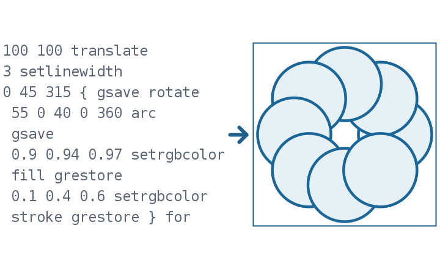

PDF and PostScript in pure Java – from the object to the painted glyph
Function overview for the presentation of the envisionz framework, as of 28 Sep 2026. Objects, filters and encryption,
text extraction with font encodings, images including fax, JBIG2 and JPEG 2000 decoders, a page painter with embedded fonts,
a plain PDF writer and an interpreter for PostScript and EPS. For each method: purpose, API, use in the framework,
applications, examples. The examples are shortened.
Many API names are German (e.g. Seitenmaler = page painter, Schrift = font, Entschluesselung = decryption, Auswerter = interpreter); they are shown unchanged.

EpsDokument and PsBild: the PostScript program on the left, its picture on the right.Principles of the module
Inflater for FlateDecode, javax.imageio for JPEG, and MD5, SHA-2 and AES; RC4, fax, JBIG2, JPEG 2000 and the font readers are written in-house.PdfDocument looks for every N G obj in the file; the last occurrence wins. That survives broken offsets and incremental updates; object streams are expanded./ToUnicode are reported. A substitute font that is not reported looks like the real one.PdfWriter produces files with exactly known content against which text extraction is checked; an independent tool (pypdfium2) reads the same files correctly.Document, objects, filters, encryption envisionz.pdf
PdfDocument, PdfLexer, PdfObject
Object table, reference resolution, page tree. PdfObject is a sealed interface with nine record types (null, boolean, number, string, name, array, dictionary, stream, reference), so that the compiler checks a switch for exhaustiveness. The lexer knows the three traps of naive parsers: nested parenthesised strings, # escapes in names, and a /Length that is itself a reference. The catalogue is found even without a trailer keyword. Background, formulas and pseudocode →
Methods
PdfDocument.load(pfad),load(bytes[, passwort])pageCount(),page(i),pages(),version(),objectCount()object(nummer),resolve(o),get(dict, schluessel),resources(seite),mediaBox(seite)PdfObject.PdfDict,PdfStream,PdfArray,PdfName,PdfNumber,PdfString,PdfRef…
Used in
What for
Inspecting the structure and objects of a PDF file, even a damaged one; the basis for text, image and page rendering.
PdfFilters, PdfEntschluesselung, PdfPasswortException
Stream filters FlateDecode, LZW, ASCIIHex, ASCII85 and RunLength, including PNG and TIFF predictors – without them the length is right but the values are not. Image filters yield an image, not bytes, and are left to PdfImages. Decryption implements the standard security handler in all revisions: R2–R4 with RC4 or AES-128, R5/R6 with AES-256. A password is tried as user password, then as owner password; the permissions in /P are not enforced, the module only reads.
Methods
PdfFilters.decode(strom, doc),filters(...),decodeParms(...),isImageFilter(name)inflate(in),lzw(in, earlyChange),asciiHex(in),ascii85(in),runLength(in)PdfPasswortException.passwortGegeben()– wrong or missing password
Used in
What for
Opening the many files that carry only an owner password against printing or copying, and locked files with a known password.
Example – open a protected file
try {
PdfDocument doc = PdfDocument.load(Files.readAllBytes(pfad), passwort);
} catch (PdfPasswortException e) {
// e.passwortGegeben(): wrong or not given at all
}Text extraction envisionz.pdf
PdfText, PdfFontEncoding, PdfToUnicode, PdfCidBreiten
A PDF stores no running text, only “these glyphs at those positions”. Extraction interprets the text operators including the text matrix, maps codes through the font encoding (Standard, WinAnsi, MacRoman, /Differences, built-in Type 1 encoding, TeX encodings) and rebuilds lines and words from the placed glyphs. CID fonts via /ToUnicode with widths from /W; ligatures become ordinary letters; two-column layout is split at a continuous gutter. Background, formulas and pseudocode →
Methods
PdfText.extract(doc, seite[, optionen])→PageText(fragments, lines, text, warnings)PdfText.extractAll(doc);Fragment(text, x, y, fontSize, font, width, spaceWidth)Options:lineTolerance,spaceFactor(0.60),detectColumns,columnGapFactor,skipBlankPdfFontEncoding.of(doc, schrift),decode(code),glyphToUnicode(name);PdfToUnicode.parse(bytes)
Used in
What for
Making technical manuals searchable, text for a knowledge base, tables from typeset PDFs.
Example 1 – text of one page
PdfDocument doc = PdfDocument.load(Path.of("handbuch.pdf"));
PdfText.PageText s = PdfText.extract(doc, doc.page(0));
s.lines().forEach(System.out::println);
if (s.hasWarnings()) s.warnings().forEach(System.err::println);Example 2 – read a table row by row
PdfText.Options o = new PdfText.Options();
o.detectColumns = false; // column detection would otherwise read tables column by column
PdfText.PageText t = PdfText.extract(doc, doc.page(3), o);/ToUnicode remain unreadable and are reported in warnings(), not guessed.Images and their position on the page envisionz.pdf
PdfImages and PdfContentPlacement
Raw data, Flate and LZW are turned into an image here, DCT (JPEG) via javax.imageio, fax, JBIG2 and JPEG 2000 via the own decoders. Colour spaces grey, RGB, CMYK, indexed, ICC, DeviceN and Separation, bit depths up to 16. A filter that cannot be handled is named in unsupportedFilter. composePage assembles scanned strips by their position from the content stream, not by the arbitrary order of the resource dictionary – on one manual page this turned 13 rows and 0 columns into 63 × 15. Background, formulas and pseudocode →
Methods
PdfImages.extract(doc, seite)→Extracted(name, width, height, bpc, filter, image, unsupportedFilter),ok()PdfImages.composePage(doc, seite),extractAll(doc),bild(doc, strom)PdfContentPlacement.imagePlacements(doc, seite)→Placement(name, x, y, width, height),contentBytes(doc, seite)
Used in
What for
Pulling scanned performance tables and charts out of manuals in order to digitise them.
Example – the scanned page as one image
BufferedImage seite = PdfImages.composePage(doc, doc.page(1));
for (PdfImages.Extracted e : PdfImages.extract(doc, doc.page(1)))
if (!e.ok()) System.out.println(e.name() + ": " + e.unsupportedFilter());Fax and JBIG2 envisionz.pdf.ccitt · envisionz.pdf.jbig2
CcittDecoder and Jbig2Decoder – what scans almost always contain
CCITT Group 3 and 4: modified Huffman codes for run lengths and two-dimensional line references; not in the JDK. JBIG2 complete for PDF: generic regions (arithmetic and MMR), symbol dictionary and text region, refinement, custom Huffman tables, halftone and EXTTEMPLATE; the colour extension is not used in PDF and is reported. The MQ decoder is checked against the T.88 test sequence. Background, formulas and pseudocode →
Methods
CcittDecoder.decode(daten, params[, verbraucht]),toPacked(pixel, w, h, blackIs1)CcittDecoder.Params:k(<0 Group 4),columns,rows,byteAlign,blackIs1Jbig2Decoder.decode(daten, globals, breite, hoehe)→Bitmap(width, height, pixels),get(x, y)new MQDecoder(daten, start, ende).decode(cx, i)
Used in
What for
Scanned manuals: a Cessna 560 performance manual with 80 fax strips, an engine book with one JBIG2 image per page.
Example – one fax strip, Group 4
CcittDecoder.Params p = new CcittDecoder.Params();
p.k = -1; p.columns = 2040; p.rows = 63;
byte[] pixel = CcittDecoder.decode(daten, p);JPEG 2000 envisionz.pdf.jpx
Jpx – ISO/IEC 15444-1 without a third-party library
The JDK cannot read JPEG 2000. Own implementation of Part 1: main and tile-part headers, division into resolutions, subbands, precincts and code blocks, EBCOT with all code-block styles, inverse 5/3 and 9/7 wavelets, component transform, the JP2 container with colour specification, palette and channel definition. The MQ decoder is the same as for JBIG2. Checked against ITU conformance data. Background, formulas and pseudocode →
Methods
Jpx.dekodiere(bytes[, reduzieren])→Bild(breite, hoehe, komponenten, …)Jpx.rgb(bild)→BufferedImage,acht(v, tiefe)Jpx.aufbau(bytes)→Aufbau(jp2, breite, hoehe, tiefe, vorzeichen, …)– header only- internal:
Codestrom,Kachel,Tagbaum,Blockdekoder,Wavelet,Jp2
Used in
What for
Displaying and inspecting images in newer PDFs and standalone .jp2 files.
Example – JP2 file as an image, half resolution
Jpx.Bild b = Jpx.dekodiere(Files.readAllBytes(Path.of("scan.jp2")), 1);
BufferedImage img = Jpx.rgb(b);Page painter and embedded fonts envisionz.pdf.schrift
PdfSeitenmaler, PdfSchriften, TrueTypeSchrift, CffSchrift, Type1Schrift
Paints a page into a Graphics2D: every glyph as an outline of the embedded font, at its position, in its size and fill colour, plus paths and areas, images, form XObjects, dashing and the text rendering modes. The outline readers are in-house: TrueType (glyf, cmap formats 0, 4, 6, 12), CFF with Type 2 charstrings and Type 1 with eexec. If no font is embedded, it paints a substitute font stretched to the measured width and reports it with name and count. Background, formulas and pseudocode →
Methods
new PdfSeitenmaler(doc).textschicht(seite, g, massstab, hoehe),meldungen()echteGlyphen(),ersetzteGlyphen(),unsichtbareGlyphen(),gemalteBilder(),gemaltePfade()PdfSeitenmaler.sichtbareGlyphen(doc, seite)– scanned or typeset?Glyphenquelle:umriss(gid),vorrueckung(gid),einheitenProGeviert();TrueTypeSchrift.cmap(plattform, kodierung)
Used in
What for
Page preview without a foreign renderer, native-image friendly (only Shape and fill); deciding whether a page is digitised or read as text.
Example – paint a page at twice the size
PdfSeitenmaler maler = new PdfSeitenmaler(doc);
double[] mb = doc.mediaBox(seite); // left, bottom, right, top
maler.textschicht(seite, g, 2.0, mb[3] - mb[1]);
maler.meldungen().forEach(System.out::println); // substituted fonts
boolean gescannt = PdfSeitenmaler.sichtbareGlyphen(doc, seite) == 0;Writing PDF envisionz.pdf
PdfWriter – plain and verifiable
PDF 1.4, uncompressed content streams, nine standard fonts without embedding – larger, but readable in a text editor. Text, lines, rectangles, filled areas, raster images and tables with page breaks and repeated header, cell style per cell. Two traps handled: numbers never in exponential form, and characters outside WinAnsi become a visible ? instead of silently vanishing.
Methods
new PdfWriter([PageSize.A4 | A4_LANDSCAPE | LETTER]),newPage(),pageCount()text,textRight,textCenter,textIn(…, farbe),line,rect,fill,image(x, y, w, h, bild)table(kopf, zeilen, stil[, startY]);TableStyle: column widths, right alignment, title,repeatHeader,zellstilsave(pfad),build();Font: Helvetica, Courier, Times with their styles, Symbol
Used in
What for
Reports as PDF; test files with known content for text extraction; documenting what was obtained from a scan.
Example – a table in landscape
PdfWriter w = new PdfWriter(PdfWriter.PageSize.A4_LANDSCAPE);
PdfWriter.TableStyle st = new PdfWriter.TableStyle();
st.title = "Betriebspunkte";
st.rightAlign = new boolean[] {false, true, true};
w.table(new String[] {"Fall", "W2 [kg/s]", "PR"}, zeilen, st);
w.save(Path.of("bericht.pdf"));PostScript and EPS envisionz.ps
EpsDokument, PsAuswerter, PsBild, PsLeser
Executes as much PostScript as needed to obtain paths, set texts and bitmap masks: operand stack, dictionaries, procedures, transformation stack, path construction. Generated files (gnuplot, matplotlib, dvips, Tecplot) follow a narrow pattern, and that is enough for them. Unknown operators are skipped and counted in order of first occurrence; a step limit stops files that compute instead of draw. Header from DSC comments; ASCII and DOS-EPS previews are recognised. Background, formulas and pseudocode →
Methods
EpsDokument.lies(pfad):kopf(name),zeichenflaeche(),erzeuger(),seiten(),pfade(),texte(),unbekannt()PsBild.zeichne(dokument, dpi),zeichne(dokument, seite, dpi)new PsAuswerter().auswerten(quelle)→List<PsPfad>;texte(),bitmaps()PsPfad.segmente(),streckenzuege(stuecke);new PsLeser(quelle).alles()
Used in
What for
Digitising old charts as vector data instead of as an image; viewing EPS figures.
Example – draw an EPS and check what was skipped
EpsDokument eps = EpsDokument.lies(Path.of("kennfeld.eps"));
BufferedImage bild = PsBild.zeichne(eps, 150);
eps.unbekannt().forEach((name, n) -> System.out.println(name + " ×" + n));Usage matrix in the framework
Which modules use which parts today, counted in the source code (excluding probes).
| Module | Document / objects | Text | Images | JPEG 2000 | Page painter | Writing | PostScript | What for |
|---|---|---|---|---|---|---|---|---|
| app-fileanalysis | ● | ● | ● | ● | ● | ● | Inspecting PDF, JP2 and PS files, page image, text extraction | |
| app-pdfdigitizer | ● | ● | ● | ● | ● | Obtaining tables and charts from scans and typeset PDFs | ||
| app-report | ● | Report output as PDF |
PdfImages. FlateDecode still runs through the JDK's Inflater, and PdfWriter compresses images with the JDK's Deflater; LZW has come from framework-compress since 23 Sep 2026.